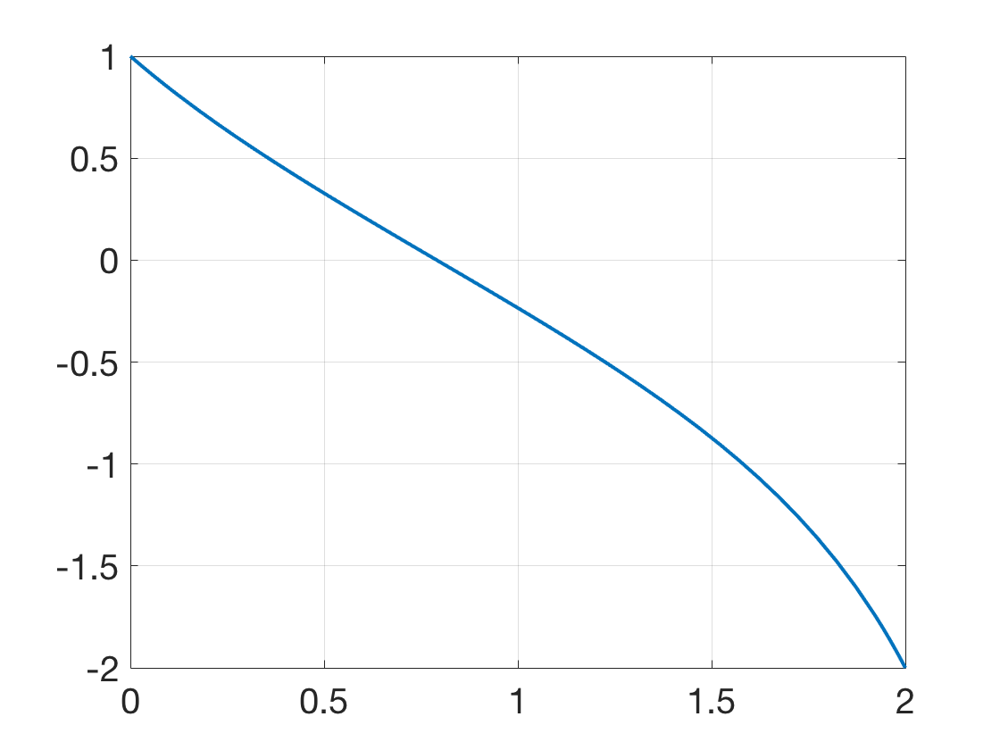

Additional Examples 7.1
1 (a) Use Theorem 7.1 to prove that the boundary value problem has a solution \(y(t)\), and that the solution is unique.
\[ \left\{
\begin{array}{l}
y'' = -e^{6-2y}\\
y(1)=3\\
y(e)=4
\end{array} \right. \]
(b) Show that the solution is \(y(t) = \ln t + 3\).
(a) The partial derivatives of \(f(t,y,z)=-e^{6-2y}\) are continuous, and the partial derivative \(f_y = 2e^{6-2y}>0\) for all \(y\). Theorem 7.1 implies that a unique solution
to the BVP exists.
(b) \begin{eqnarray*}
y(t)&=& \ln t+3\\
y'(t) &=& 1/t\\
y''(t) &=& -1/t^2
\end{eqnarray*}
Since \(e^{6-2y} = e^6e^{-2(\ln t+3)} = e^6t^{-2}e^{-6} = t^{-2}\), it follows that \(y'' = -e^{6-2y}\).
The boundary conditions are easily checked.
2 Implement the shooting method to plot the solution of the boundary value problem
\[ \left\{
\begin{array}{l}
y'' = y^3+y\\
y(0)=1\\
y(2)=-2.
\end{array} \right. \]

First, define a function F.m such that a root of \(F\) solves the initial value problem:
function z=F(s)
a=0;b=2;yb=-2;
ydot=@(t,y) [y(2); y(1)^3+y(1)];
[t,y]=ode45(ydot,[a,b],[1,s]);
z=y(end,1)-yb;
Evaluating the function, it is found that \(F(-2)=-5.1569\) and \(F(-1)=3.5146\). The following code uses Matlab's fzero to solve
for the initial condition \(s^*=-1.6547.\)
sstar=fzero(@F,[-2 -1])
ydot=@(t,y) [y(2); y(1)^3+y(1)];
[t,y]=ode45(ydot,[0,2],[1,sstar]);
plot(t,y(:,1),'LineWidth',2);grid
